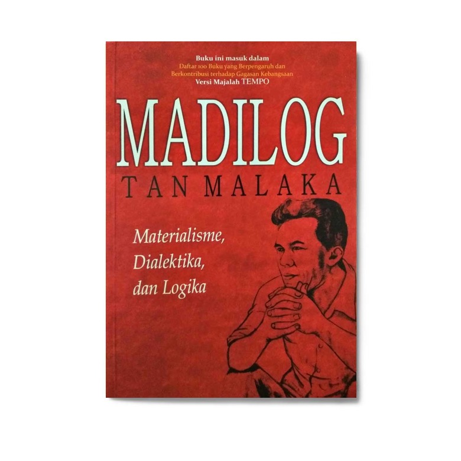

Biografi

Tan Malaka adalah pemikir revolusioner asal Sumatera Barat yang dijuluki Bapak Republik Indonesia karena menjadi orang pertama yang merumuskan konsep negara republik melalui bukunya Naar de Republiek Indonesia pada 1925. Sebagian besar hidupnya dihabiskan dalam pengembaraan dan pelarian internasional sebagai buronan polisi rahasia kolonial, namun ia tetap produktif melahirkan karya intelektual besar seperti Madilog. Melalui tulisan-tulisannya, ia berupaya merombak pola pikir masyarakat dari logika mistis menuju cara berpikir rasional dan ilmiah sebagai fondasi kemerdekaan yang hakiki.
Karena keteguhannya pada prinsip "Merdeka 100%", Tan Malaka sering berseberangan dengan kebijakan diplomasi pemerintah Indonesia pasca-proklamasi hingga akhirnya tewas ditembak di Kediri pada Februari 1949. Meskipun namanya sempat lama dikaburkan dalam catatan sejarah resmi, kontribusi besar sang pengembara ini tetap abadi dan diakui negara melalui gelar Pahlawan Nasional yang dianugerahkan sejak tahun 1963. Sosoknya hingga kini tetap dikenang sebagai simbol perlawanan dan kecerdasan kritis bagi gerakan pemuda di Indonesia.
Perjuangan

Sepulangnya ke Indonesia, Tan Malaka bekerja sebagai guru bahasa Melayu untuk anak-anak di perkebunan Sinembah, Sumatera Utara. Di sana, ia melihat langsung penderitaan buruh yang ditipu dan dibayar murah. Inilah yang mendorongnya aktif dalam perjuangan politik. Ia kemudian bergabung dengan Indische Sociaal-Democratische Vereeniging (ISDV), cikal bakal Partai Komunis Indonesia.
Pada 1920-an, ia pindah ke Jawa dan mendirikan sekolah untuk anak-anak Sarekat Islam di Semarang. Karena aktivitas politiknya, ia ditangkap dan diasingkan ke Belanda pada 1922. Sejak itu, ia hidup berpindah-pindah dan terus menjadi buronan Belanda.
Tan Malaka hidup berpindah-pindah di berbagai negara seperti Tiongkok, Rusia, Jepang, Singapura, dan Filipina. Meski sering berada di luar negeri, ia tetap menentang penindasan.
Selama tinggal di Tiongkok, Tan Malaka menulis buku Naar de Republiek Indonesia. Di buku ini, ia merumuskan cita-cita dan struktur negara Indonesia merdeka yang menurutnya paling tepat berbentuk Republik.
Pada tahun 1942, Tan Malaka kembali ke Indonesia setelah 20 tahun hidup dalam pelarian. Ia hidup di Kalibata sebagai pedagang buah untuk memahami kehidupan rakyat. Kemudian ia pindah ke Banten, bekerja sebagai juru tulis romusha dengan nama samaran Ilyas Hussein.
Setelah proklamasi 17 Agustus, Tan merasa Indonesia belum merdeka sepenuhnya. Untuk membuktikan bahwa kemerdekaan didukung rakyat, ia menggerakan pemuda melalui aksi massa. Puncaknya terjadi pada 19 September 1945 dalam Rapat Raksasa Lapangan IKADA yang dihadiri 200 ribu orang.
Karena pengaruh dan gagasannya, Tan sempat ditawari jabatan sebagai Menteri Penerangan, tapi ia menolak dan memilih mendukung dari belakang dengan menggerakan rakyat.
Situasi memanas saat Belanda datang kembali bersama sekutu. Pemerintah (Sjahrir, Soekarno, Hatta) memilih jalur diplomasi, sementara Tan dan Jenderal Soedirman menuntut kemerdekaan 100% tanpa kompromi.
Rasa kecewa ini melahirkan Persatuan Perjuangan pada 4 Januari 1946 yang diikuti ratusan organisasi. Tan dan Soedirman menjadi tokoh utamanya dan menolak perundingan seperti Perjanjian Linggarjati. Konflik politik memuncak pada peristiwa 3 Juli 1946 dan berujung pada penangkapan Tan Malaka.
Karya
Tan Malaka bukan hanya seorang penggerak massa, ia adalah seorang intelektual yang tajam. Di tengah pelariannya dari kejaran agen rahasia berbagai negara, ia tetap produktif melahirkan karya-karya monumental yang menggabungkan analisis marxisme dengan realitas lokal Indonesia. Karya-karyanya menjadi suluh bagi para pemuda di masa perjuangan, menawarkan konsep tentang kedaulatan penuh (merdeka 100%) dan identitas bangsa yang merdeka secara logika maupun politik.
Madilog

Karya ini merupakan panduan berpikir ilmiah yang disusun Tan Malaka untuk merombak mentalitas "logika mistika" atau takhayul masyarakat Indonesia. Dengan menggabungkan konsep materialisme, dialektika, dan logika, ia menawarkan senjata intelektual agar bangsa ini mampu berpikir rasional, objektif, dan mandiri sebagai modal utama meraih kemerdekaan sejati
Aksi Massa

Buku ini adalah panduan taktis yang menegaskan bahwa kemerdekaan tidak bisa dicapai melalui pemberontakan individu atau kelompok kecil yang sporadis. Tan Malaka menekankan pentingnya pergerakan rakyat luas yang terorganisir secara sadar, di mana kekuatan kolektif kaum buruh dan tani menjadi kunci utama untuk menggulingkan kekuasaan kolonial secara total.
Dari Penjara ke Penjara

Autobiografi ini merekam jejak perjuangan hidup Tan Malaka sebagai buronan internasional yang berpindah-pindah negara dengan berbagai nama samaran. Ditulis di balik jeruji besi, catatan ini bukan sekadar kisah pelarian, melainkan bukti keteguhan prinsip seorang pejuang yang setia pada cita-cita "Merdeka 100%" meskipun harus kehilangan kebebasan fisiknya berkali-kali.